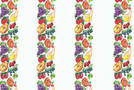

Lickable Wallpaper

How to Make Lickable Wallpaper
Adorned with vivid illustrations of luscious fruits, the wallpaper boasts a glossy, three-dimensional texture that beckons exploration. What makes it truly enchanting is its magical property it is not just a feast for the eyes but a treat for the taste buds as well.
Ingredients
Below you will find everything needed to make your own everlasting gobstopper.
- Edible paper
- Fruit flavored syrups
- Edible glue
Directions
- Prepare Ingredients:
- Measure all the ingredients and have them ready before you start.
- Prepare Edible Paper:
- Cut the edible paper into wallpaper-sized sheets or strips.
- Use food coloring or edible ink to draw vibrant and realistic fruit illustrations on the paper. Allow the ink to dry completely.
- Create Flavored Syrups:
- Mix fruit-flavored syrups or extracts with sugar to create a variety of flavorful syrups. Adjust the sweetness and intensity according to your preference.
- Apply Edible Glue:
- Use corn syrup or honey as an edible glue to lightly coat the back of the edible paper. This will make it sticky and allow it to adhere to the wall or surface.
- Stick the Wallpaper:
- Carefully press the flavored and illustrated side of the edible paper onto a clean and smooth wall surface. Make sure it sticks securely.
- Let It Dry:
- Allow the wallpaper to dry completely before inviting guests to experience the interactive and flavorful delight.